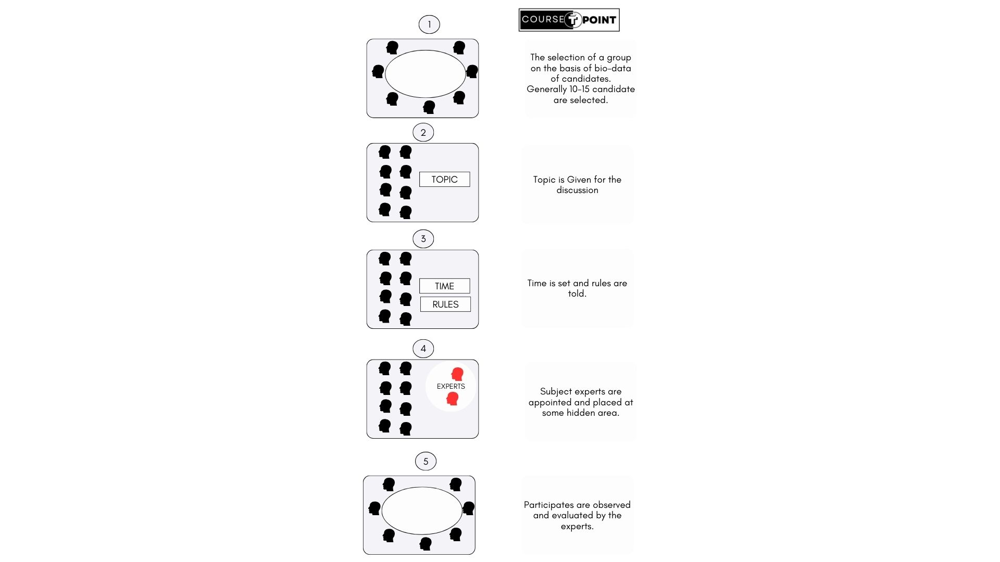

Practical in Business Communication
| Table Of Content |
|---|
Public speaking.
Public speaking is most important part of our life and it can be viewed from the stand point of Individual. public speaking is major means of any person's professional success. when one apply for a job, the interviewer accessone, based on the ability of communicate. A Person who can organize his such abilities when speak, the audience evaluate his personality and if the response is good, it will certainly enhance one's self esteem expand.
Public speaking is when someone talks to a group of people. It could be a speech, presentation, or even just sharing ideas with others. It's a skill that involves speaking clearly, confidently, and effectively to get your message across to your audience. Public speaking can happen in various settings like schools, workplaces, meetings, or events. It's about being able to communicate your thoughts and ideas in a way that engages and informs others.
Preparation of public speaking
Careful planning is essential for successful speeches. The better presentation in advance give more confidence on stage.
- Determine the purpose: Each speech can have a general and specific purpose. The most common general purpose of business talks is to inform or instruct and to entertain. The specific purpose is to achieve a definite specific result.
- Analyse the Audience and the Situation: For public speaking audience analysis is very essential activity. One should analyse the audience and the situation in order to speak successfully in public.
- Choose the Main idea for Message: In this step we prepare fotr the min idea of our message. Importance to this step is because the success of the speech is very much dependent on this step.
- Research on the Topic Thoroughly: In this step we research thoroughly on the topic as the audience can also have knowledge about the topic. When we know the purpose, our audience have some idea to be covered we proceed to collect the needed facts.
- Organise the Data: In this step our data in way that it will show a continuity and
completeness. A good speech have three Parts:
- Intoduction
- Discussion
- Conclusion
- Plan Visual aids if Desirable: To Help get our message accross to the audience we may also need to plan meaningful visual aids for the display at the appropriate time. These are charts, projector sheets, high technology visual aids etc.
- Release the talk and revise where necessary: Release the talk and revise necessary means Revise your speech before going the front of Audience when it is required.
Importance of Public speaking
- Help in Personal Developement
- Increase your Confidence Level
- Improve your Communication skill
- Building Connection and Relationships
- Helps to learning and sharing knowledge.
Seminars
A seminar is a type of educational or informational gathering where a group of people comes together to discuss a specific topic or subject in depth.
A seminar is a meeting or conference that involves a small group of participants engaging in discussions, presentations, or workshops focused on a particular theme, subject, or issue.
The primary purpose of a seminar is to facilitate learning, sharing of knowledge, and critical thinking about a specific topic. Seminars provide an opportunity for participants to deep into a subject, explore different perspectives, exchange ideas, and gain insights from each other.
Benefits of attending Seminars:
- Oral Communication:
- Helps you become better Listener.
- Present Your argument and ideas clearly.
- Be open to other point of view.
- Expert Knownledge:
- Gives you intensive exposers.
- Ideal opportunity for them, who want to study a topic in depth.
- Involves a wide range in specific field.
- Networking:
- Gives opportunity to meet other people.
- Offers Chances to debate.
- Meeting new people can offer
- Encouragement.
- Renewed Motivation:
- Provides chances to get away and dedicate yourself to the topic.
- Leads to higher productivity abd fulfillment of professional and academic goals.
Difference Between Seminars and Presentation
| S.NO | On the Basis | Seminars | Presentation |
|---|---|---|---|
| 1 | Purpose | Facilitate in-depth discussions and learning on a specific topic or subject. | Deliver information or ideas to an audience in a structured manner. |
| 2 | Format | Typically involves multiple speakers, discussions,workshops, Q&A sessions, and interactive activities. | Typically involves a single speaker delivering information using slides, visuals, or other aids. |
| 3 | Audience Interaction | Encourages active participation, questions, and discussions among participants. | Limited interaction with the audience, usually reserved for Q&A sessions at the end. |
| 4 | Time duration | Generally seminars are long compare to presentation due to depth of the Topic. | Where Presentation are take less time. |
| 5 | Objective/Goal | To facilitate learning, critical thinking, and knowledge sharing. | To inform, persuade, or entertain the audience on the particular topic and idea. |
Group Discussion
Group Discussion is a method to evaluate the unseen inner capabilities of a Person while interacting with others. It shows off the hidden talent, individuals Potential capacity.Group discussion is now being used as a tool for assessing the suitability of a candidate in various high-profile exams and selections.
Importance of Group Discussion
- Group discussion involves responsibility and leadership.
- Group discussion help to judge the actual Behavior of an individuals.
- Group discussion, personality of a candidate is more accurately judged.
- Group discussion explores more candidates at a time than an interview process.
- It gives the advantage of listening to a wide variety of views and develop one's own view.
Process of Group discussion
Following are given some important guidelines for a group discussion.
- There are must be round or oval shaped table for better viewing, eye contact and interacting.
- The light and sound system may be perfect so that body language and reflexes can be seen easily.
- The ideal strength of participants in a group discussion should not exceed 15.
- Observers must be hidden at some place from where they can minutely observe each and every candidate. But, the candidates can not see them.
Process of Group discussion is as given below:
Types of Group:
- Formal Group:The Person alike in the authority and responsibility capacities are put group.Therefore, it is called formal group.
- Informal Group:When the person have same interests or some aim, they are formed a single group. There is very old saying that "The birds of the same feather flock together."
- Specialised Group:When a work is to be completed. This Target is given to that group which includes the persons having the traits to do that work.
Effective Group Discussion
- Vocabulary: The strong hold on the language is very important factor for an effective group discussion.
- Cooperation: Which shows a peron's attitude of a team building and respect of one's colleagues.
- Accuracy: The Speaker in a Group Discussion must talk to the point.
- Patience: Patience is one of the best qualities in a candidate in Group discussion.
- Interest: If we know well and have knowledge about a subject matter, we must have show our interest also.